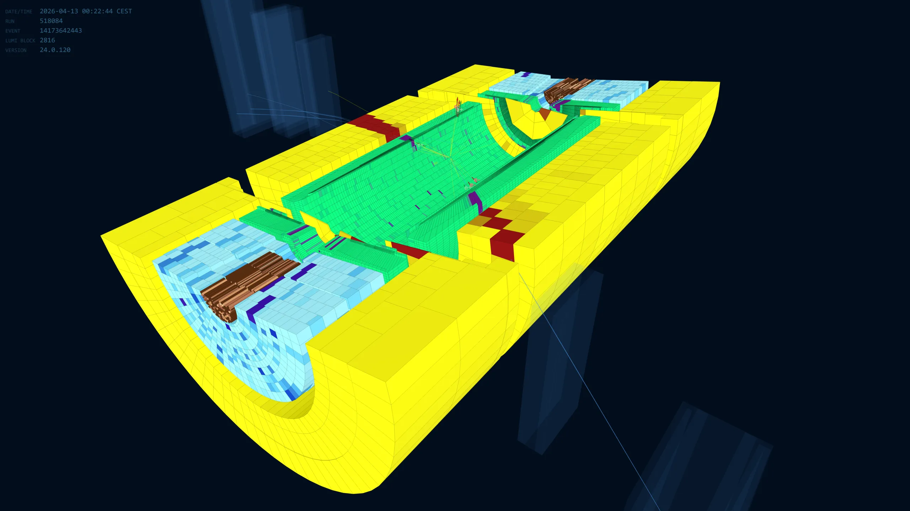
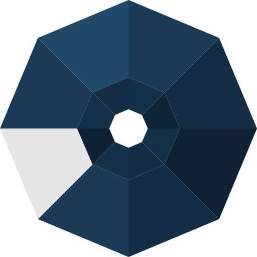

NIPSCERN
High energy physics, scientific computing, 3D visualisation, hardware systems and artificial intelligence. Two laboratories: NIPS at UFJF, in Brazil, and Route Salam, at CERN, in Switzerland.

Live Collision Event
Interactive 3D rendering of the ATLAS calorimeter. Each coloured cell is energy left behind by particles from a collision.

- cells
- 186,000
- sub-detectors
- 6
- coverage
- |η| ≤ 4.9
- in the browser
- WebGL 2
About & Science
Meet the Team
Researchers, engineers, and students working at the intersection of particle physics, hardware design, and scientific computing, at UFJF and at CERN.
100+ Articles
Spanning calorimetry, firmware design in FPGA, embedded processors, machine learning for trigger systems, and high energy physics.
Latest From the Lab
News
All newsPapers
All publicationsOur Projects
Tools, architectures, and systems built at NIPS-CERN.
Design a processor, compile for it, simulate it, put it on an FPGA. One toolchain for the whole path.
Takes C± or C++ down to assembly, to synthesizable Verilog, to memory images and a testbench.
Reproduces the ATLAS Tile Calorimeter readout in real time, on an FPGA, at the detector clock.
TileCal pulse train, 40 MHzThe desktop environment where SAPHO is used: write, build, simulate and read waveforms in one place.

The calorimeter event display for ATLAS, running in a browser. 186,000 cells at interactive rates.
Calorimeter geometry, turningEvery project is open source. github.com/nipscernlab gitlab.com/nips-cern
Supported By